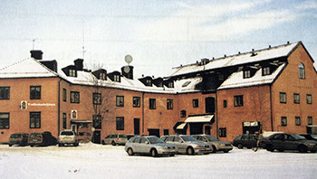
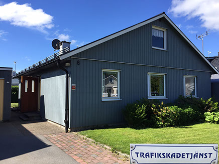

Historien om oss
Idéen om att erbjuda skadeservice till kommuner och företag vid skador orsakade av fordon ledde år 2002 till att Trafikskadetjänst startades. Inledningsvis som en del av en verksamhet som även omfattade konsulttjänster för parkering. Bolaget startade sin verksamhet i ”Rosa huset” i Ropsten. Det fick då även uppgift att vara vicevärd i fastigheten med det första uppdraget att fylla det i övrigt tomma huset med nya hyresgäster.

Det visade sig att företag och kommuner i allmänhet saknade kunskaper eller resurser att ta vara på möjligheterna till ersättning för skador som orsakas med okända fordon. Även vid skador med kända fordon hamnade ofta kostnaderna på underhållskonton när tiden inte ville räcka till för undersökningar och förhandlingar med åkare, bilägare och försäkringsbolag.
Företaget delades år 2004 så att parkering och skadeservice bildade separata bolag.
Skadeservicen lades då över till bolaget Trafikskadetjänst Sverige AB. Verksamheten sköttes då av Björn Hjelmskog ensam.
Det visade sig att företag och kommuner i allmänhet saknade kunskaper eller resurser att ta vara på möjligheterna till ersättning för skador som orsakas med okända fordon. Även vid skador med kända fordon hamnade ofta kostnaderna på underhållskonton när tiden inte ville räcka till för undersökningar och förhandlingar med åkare, bilägare och försäkringsbolag.Företaget delades år 2004 så att parkering och skadeservice bildade separata bolag. Skadeservicen lades då över till bolaget Trafikskadetjänst Sverige AB. Verksamheten sköttes då av Björn Hjelmskog ensam.
För marknadskontakter knöts Anders Landegren och Bo Bigert till bolaget. För att även bredda kontakterna geografiskt knöts så småningom även Olov Eklund, med hemvist i Mölndal till företaget med uppdrag att erbjuda våra tjänster till företag och kommuner i västra och södra Sverige.
Snart ökades omfattningen och sonen Lars anställdes i företaget. Senare anställdes även sonen Tomas.
År 2008 inträffade ett märkligt avbrott i verksamheten genom att några domslut fastställt att skador på väghållares egendom (kommuner, vägföreningar och Trafikverket) inte skulle ersättas genom trafikförsäkringen. Kostnaderna skulle enligt dessa domar stanna på väghållare med hänvisning till ålägganden i väglagen.
Det tog tre år innan Högsta Domstolen kunde undanröja denna missuppfattning och återge väghållare full rätt till ersättning för trafikskador. Under denna period anmälde Trafikskadetjänst skador för kommuner som så önskade och kunde efter HD:s dom ordna med reglering av ett stort antal skador med ersättning för kostnader och dröjsmålsränta.
Trafikskadetjänst hjälper nu ungefär hundra kommuner och lika många företag att minska kostnader och besvär efter påkörningsskador.
Bolaget är nu lokaliserat i egna lokaler i Sorunda i Nynäshamns kommun och verksamheten sysselsätter sju personer varav fyra med administration och tre med kund- och marknadskontakter.
